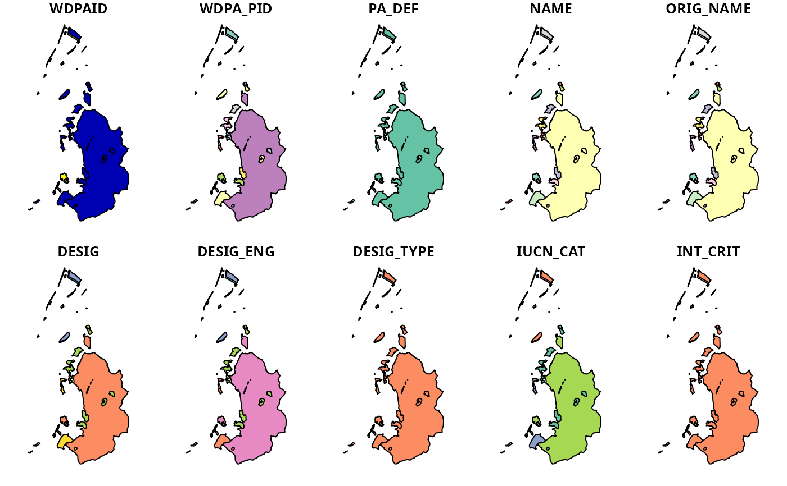

Download data from the World Database on Protected Areas (WDPA) (available at http://protectedplanet.net) and import it.
wdpa_fetch(x, wait = FALSE, download_dir = rappdirs::user_data_dir("wdpar"), force_download = FALSE, verbose = interactive())
| x |
|
|---|---|
| wait |
|
| download_dir |
|
| force_download |
|
| verbose |
|
sf object.
This function will download the specified protected area
data and return it. It is strongly recommended that the data be
cleaned prior to analysis. Check out the
wdpa_clean function to clean the data according to standard
practices. For information on this database,
prefer refer to the official manual
(https://www.protectedplanet.net/c/wdpa-manual).
wdpa_clean, wdpa_read,
wdpa_url, countrycode,
http://protectedplanet.net,
https://www.protectedplanet.net/c/wdpa-manual.
# fetch data for Liechtenstein # note that this does not include areas represented as point localities lie_raw_data <- wdpa_fetch("Liechtenstein", wait = TRUE) # fetch data for Liechtenstein using the ISO3 code lie_raw_data <- wdpa_fetch("LIE") # plot data plot(lie_raw_data)#> Warning: plotting the first 10 out of 28 attributes; use max.plot = 28 to plot all# NOT RUN { # fetch data for Liechtenstein, including areas represented as points # download global data global_raw_data <- wdpa_fetch("global", wait = TRUE) # subset data to include only Liechtenstein lie_raw_data2 <- global_raw_data %>% filter(ISO == "LIE") # plot data plot(lie_raw_data2) # }